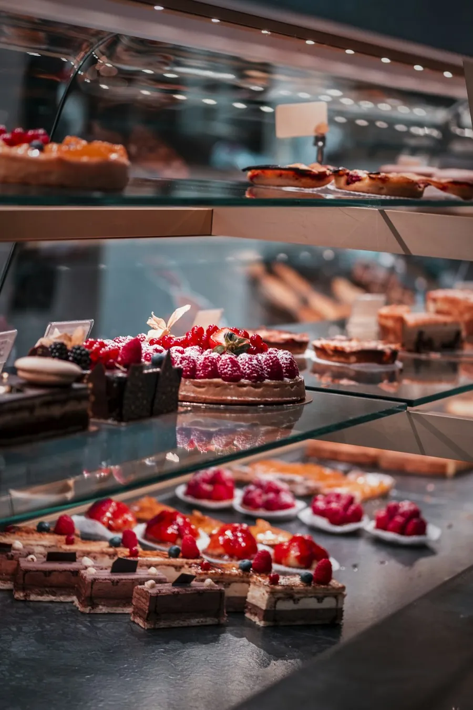
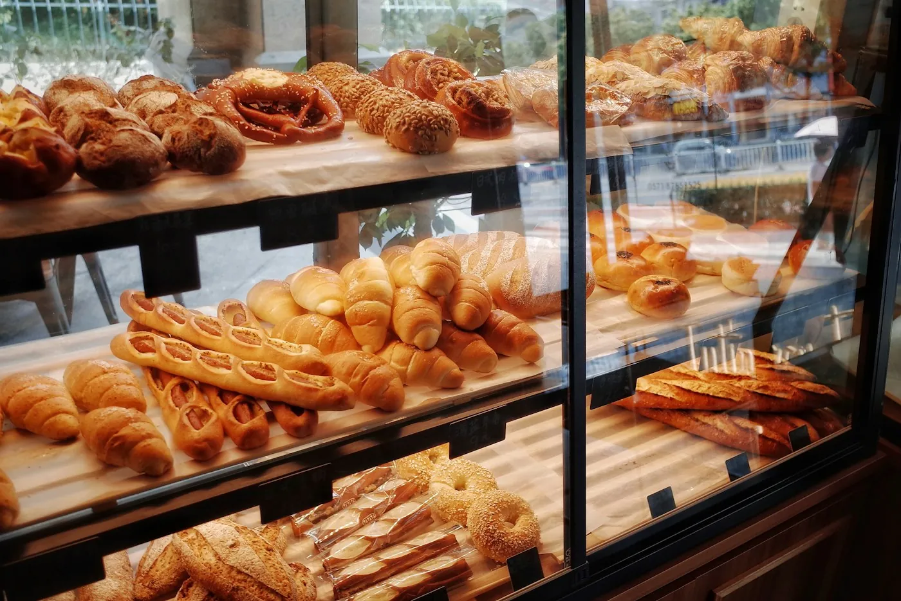
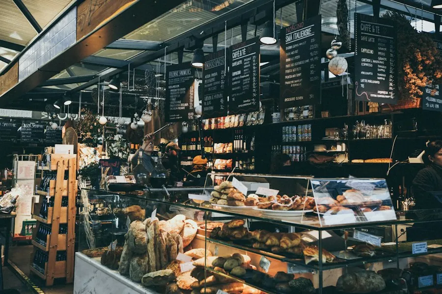

8 vídeos por mês
R$ 790/mês
Sai R$ 98,75 cada vídeo. Roteiro semanal, edição, legenda, capa e texto do post.
Sem fidelidade: cancela quando quiser.
Proposta para
Para padaria
Cheiro não passa pela tela, mas o pão estalando, o recheio do bolo e a fornada da tarde passam. Os vídeos curtos lembram o bairro todo dia de passar na sua padaria e enchem a agenda de encomendas de festa.

Exemplo de vídeo pronto: corte, legenda, preço na tela e música.


Você não precisa pensar no que postar. Toda semana mandamos o que gravar, e cada vídeo leva de 15 a 30 segundos para gravar no celular. Ideias para padaria:
Coloque o valor de uma compra comum, quantas vezes por mês o cliente volta e quanto sobra para você. Mostramos quantos clientes novos pagam os 8 vídeos. Os números já vêm preenchidos com um exemplo; troque pelos seus.
R$ 790/mês
Sai R$ 98,75 cada vídeo. Roteiro semanal, edição, legenda, capa e texto do post.
Sem fidelidade: cancela quando quiser.
R$ 150/vídeo
Para testar ou para uma data especial, como inauguração, Dia das Mães ou Black Friday.
R$ 690 uma vez
Cardápio de encomendas com fotos e preços, pedido de bolo e salgados pelo WhatsApp e horário das fornadas. Aparece no Google para “padaria perto de mim” e “bolo de aniversário” na sua cidade.
Ou R$ 89/mês com hospedagem e alterações.
Para começar com tudo: 8 vídeos + página no Google = R$ 1.480 no primeiro mês, depois só os R$ 790 dos vídeos.
Manda um vídeo de 15 segundos que você já tem no celular. Devolvemos editado para você ver a diferença, sem compromisso.
Mandar meu vídeo no WhatsAppKits para outros ramos: MercadoLoja de roupaPet shop